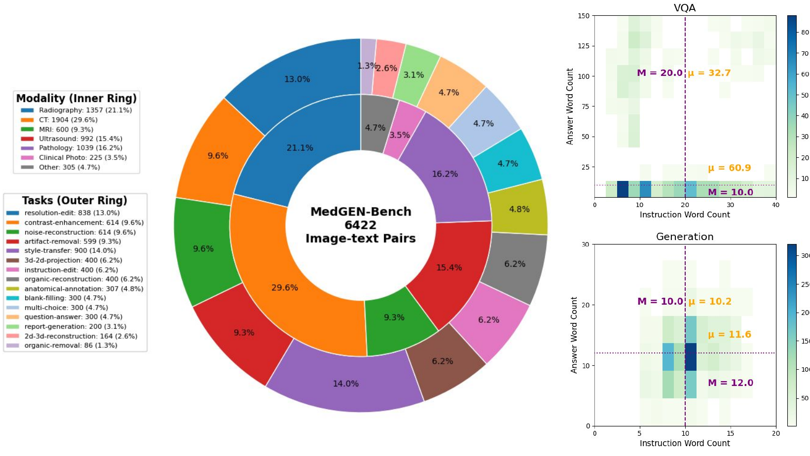
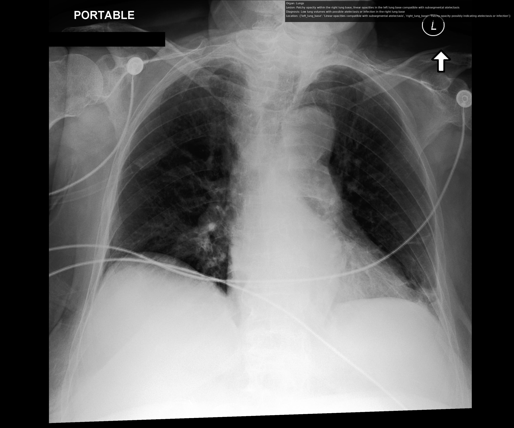
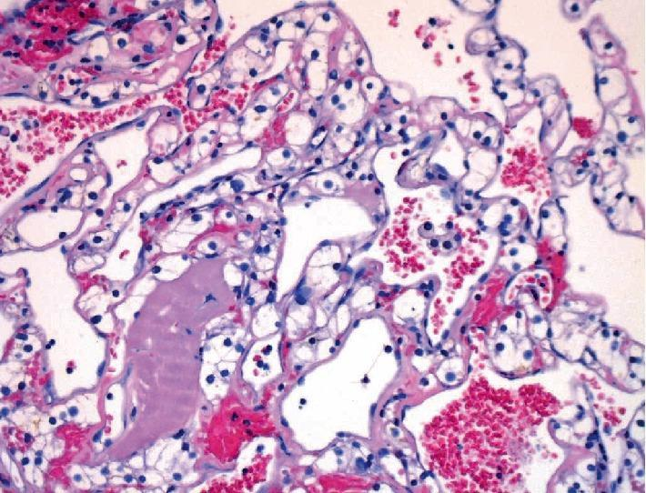
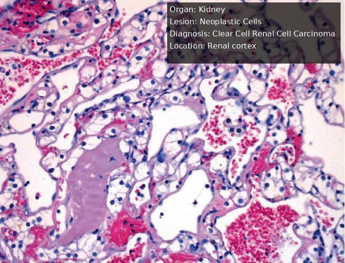
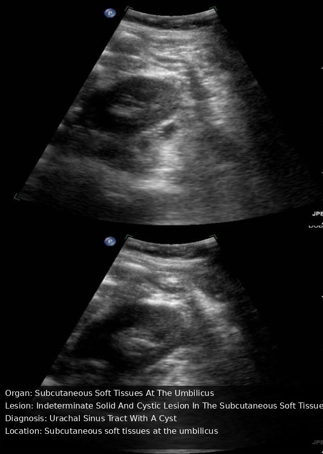
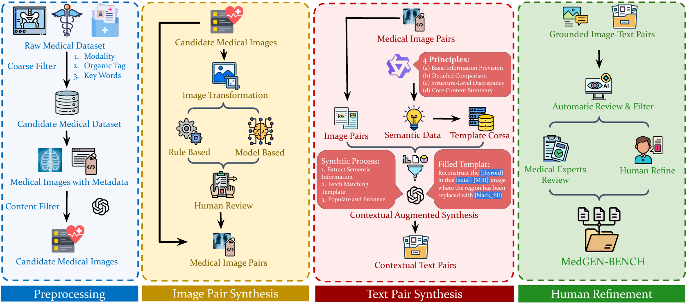
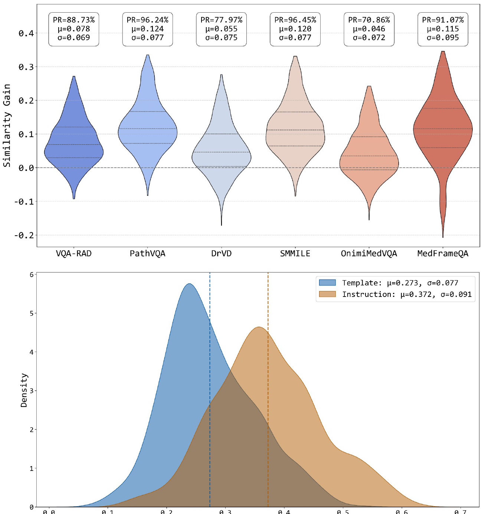

Visual Question Answering
image + query → text
Multiple choice · Blank filling · Question answering · Report generation
arXiv:2511.13135v2 · 18 November 2025
Three output formats expose different failures in multimodal medical reasoning.
image + query → text
Multiple choice · Blank filling · Question answering · Report generation
image + instruction → image
Resolution · Contrast · Noise reconstruction · Artifact removal · Annotation · Style transfer
image + context → image + text
Disease prediction · Instruction editing · Organ removal/reconstruction · 3D↔2D conversion
Modalities: CT · MRI · Ultrasound · X-ray / Radiography · Pathology · Clinical Photography

Each row shows a released MedGEN-Bench input paired with its expert-reviewed target; no model prediction is shown.
Use the previous and next buttons, or the left and right arrow keys, to browse gallery pages.








Automatic filtering and synthesis are followed by model-based checks and medical expert validation.

Local quality scores are paired with holistic judgments of clinical cross-modal alignment.

The 36.3% result measures semantic alignment, not diagnostic accuracy.
@article{yang2025medgenbench,
title = {MedGEN-Bench: Contextually entangled benchmark for open-ended multimodal medical generation},
author = {Yang, Junjie and Yan, Yuhao and Wu, Gang and Wang, Yuxuan and Liang, Ruoyu and Jiang, Xinjie and Wan, Xiang and Fan, Fenglei and Zhang, Yongquan and Qin, Feiwei and Wang, Changmiao},
journal = {arXiv preprint arXiv:2511.13135},
year = {2025}
}